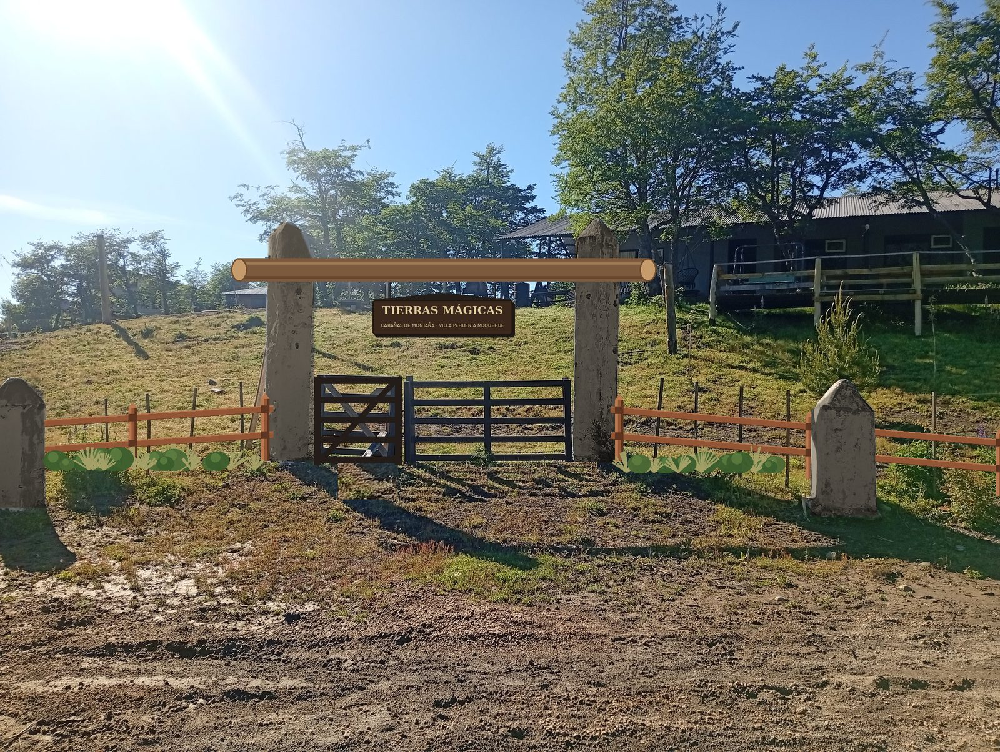

Tres opciones para el acceso
Las tres opciones usan la misma planta, la del croquis del dueño, y cambian el tratamiento. Para cada una hay un fotomontaje, la elevación desde la ruta y la planta del portal a escala, qué incluye, y una matriz para elegir.
Lo que es igual en las tres
- Cerca recta con 9 mojones de 45 × 45 × 150 cm cada 6 m, y la tranquera de 5,50 m junto al pilar de medidores.
- Portal de 3,80 m de luz con pilares de 45 × 45 × 340 cm, retirado 1,50 m hacia adentro, con alas de 2 m sobre la línea de cerca.
- Viga nueva, porque la actual está podrida. Mojones en gris piedra en lugar de blanco. Luz solar cálida dirigida hacia abajo. Banquina libre para estacionar.
Rural liviana
$El mojón manda: cerca baja y todo lo existente recuperado.

Elevación desde la ruta
Planta del portal y el atrio
Qué incluye
- Pilares y mojones reparados y pintados en gris piedra (pintura mineral).
- Viga nueva de rollizo y tabla tallada colgada (2,0 × 0,5 m).
- Portones existentes reparados, con impregnante oscuro en las dos caras.
- Cerca de postes escuadrados 4"×4" con punta y 2 travesaños pasantes; 0,95 m de alto libre.
- Atrio de ripio compactado con borde de rollizo.
- 2 luces solares bajo la viga, matas nativas aisladas.
A favor
- La más rápida y barata; casi todo con mano de obra propia.
- Los mojones de 1,50 m quedan como protagonistas sobre la cerca baja.
En contra
- Con nieve alta la cerca de 0,95 m casi desaparece.
- No es la cerca de las fotos de referencia; no se convierte después en la opción 2.
Patagónico natural
$$La cerca de las fotos de referencia, con piedra solo en la base.

Elevación desde la ruta
Planta del portal y el atrio
Qué incluye
- Pilares y mojones en gris piedra; zócalo de piedra local de 0,60 m en el portal y en el pilar de medidores.
- Viga nueva de rollizo y tabla tallada colgada (2,0 × 0,5 m), con «Buen viaje» del lado de adentro.
- Portones existentes reparados, con impregnante oscuro en las dos caras.
- Cerca de postes escuadrados 5"×5" con punta de diamante y 3 travesaños pasantes de 18'; 1,15 m de alto libre, madera natural rojiza.
- Atrio con piso de lajas de piedra local y sendero de ripio hacia las cabañas.
- 4 luces solares (cartel y pilares), faja nativa continua de 0,8 m del lado de adentro.
A favor
- Es la cerca que elegiste en las referencias.
- La piedra en la base del portal y de los medidores une los dos accesos con poca inversión.
- Buen equilibrio entre imagen, costo y trabajo propio.
En contra
- Más madera para impregnar cada 2-3 años.
- El zócalo y las lajas necesitan albañil o pircador.
Refugio de piedra
$$$Piedra en todo lo que marca el ingreso; madera oscura y metal negro.

Elevación desde la ruta
Planta del portal y el atrio
Qué incluye
- Pilares del portal revestidos de piedra en toda su altura; también los mojones que flanquean el portal y la tranquera (M1, M3 y M4). El resto, en gris piedra.
- Viga nueva de rollizo con ménsulas metálicas negras y el panel del logo existente.
- Portón peatonal nuevo: bastidor metálico negro y tablas verticales.
- Alas del atrio en pirca de piedra seca de 0,60 m en lugar de cerca.
- Cerca de postes escuadrados con 3 travesaños, en madera oscura como los portones.
- Atrio de lajas, 6 luces solares (incluye luz baja sobre las pircas), faja nativa de 1,2 m.
A favor
- La imagen más fuerte y la que mejor se lee con nieve.
- Dialoga con el pilar de piedra del vecino.
En contra
- La más cara y la más lenta: pircador y herrero.
- Reemplaza el portón peatonal, que todavía sirve.
- Más riesgo de sobredimensionar el portal.
Comparar y elegir
Cantidades principales
| Elemento | Opción 1 | Opción 2 | Opción 3 |
|---|---|---|---|
| Postes escuadrados | 25 de 4"×4" × 1,60 m | 25 de 5"×5" × 1,85 m | 21 de 5"×5" × 1,85 m |
| Travesaños | 14 de 18' + 4 de 10' | 21 de 18' + 6 de 10' | 21 de 18' |
| Piedra en pilares y mojones | — | ≈ 3,9 m² (zócalos) | ≈ 28 m² (pilares, 3 mojones y medidores) |
| Pircas en las alas | — | — | 2 × 2,5 m × 0,60 m |
| Atrio (≈ 5,7 m²) | ripio | lajas | lajas |
| Portón peatonal | se repara | se repara | nuevo, metal + madera |
| Cartel | tabla tallada | tabla tallada | panel con el logo existente |
| Luces solares | 2 | 4 + 8 balizas de sendero | 6 + 8 balizas de sendero |
| Oficios | propio | propio + pircador (≈ 4 jornales) | propio + pircador (≈ 15 jornales) + herrero |
| Inversión relativa | $ | $$ | $$$ |
Matriz de selección
Puntaje de 1 a 5 por criterio, según el análisis de este anteproyecto. Mové los pesos según tus prioridades y el total se recalcula sobre 100.
| Criterio | Peso | Op. 1 | Op. 2 | Op. 3 |
|---|---|---|---|---|
| 3 | 4 | 5 | ||
| 3 | 4 | 5 | ||
| 5 | 4 | 2 | ||
| 4 | 4 | 3 | ||
| 5 | 4 | 2 | ||
| 5 | 5 | 3 | ||
| Total sobre 100 |
Recomendación: opción 2, Patagónico natural. Con los pesos de base gana por poco a la opción 1 y supera con claridad a la 3. Usa la cerca que elegiste en las referencias, mantiene casi todo con mano de obra propia y suma piedra solo donde rinde: en la base del portal y de los medidores. Si el presupuesto es lo que más pesa, conviene la opción 1. La opción 3 se justifica solo si se busca la mayor presencia desde la ruta y se acepta reemplazar el portón peatonal.